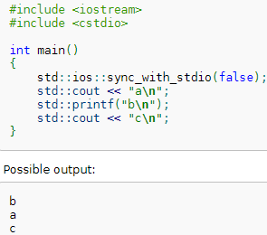
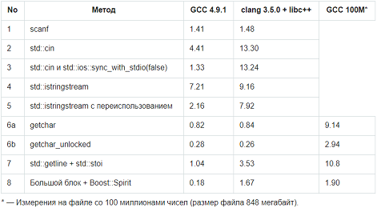

При запуске консольного приложения неявно открываются три потока: stdin — для ввода с клавиатуры, stdout — для буферизованного вывода на монитор и stderr — для небуферизованного вывода на монитор сообщений об ошибках.
typedef struct {
char *fpos; /* Current position of file pointer (absolute address) */
void *base; /* Pointer to the base of the file */
unsigned short handle; /* File handle */
short flags; /* Flags (see FileFlags) */
short unget; /* 1-byte buffer for ungetc (b15=1 if non-empty) */
unsigned long alloc; /* Number of currently allocated bytes for the file */
unsigned short buffincrement; /* Number of bytes allocated at once */
} FILE;
Для того, чтобы в программе можно было смешивать iostreams и stdio, была введена синхронизация.
std::ios::sync_with_stdio(false);
По умолчанию, при работе со стандартными потоками (std::cin, std::cout, std::cerr...) буфер сбрасывается после каждой операции ввода-вывода, чтобы данные не перемешивались. Если же мы предполагаем пользоваться только iostream, то мы можем отключить эту синхронизацию.

Без такой синхронизации std::cin может конкуррировать со scanf'ом в скорости.
Скорость функций ввода

Информация взята с https://habrahabr.ru/post/246257/
Код собственного потока на основе FILE во вложении
Рекомендации к написанию своих потоков ввода-вывода в C++ с помощью std::streambuf:
https://habrahabr.ru/post/326578/